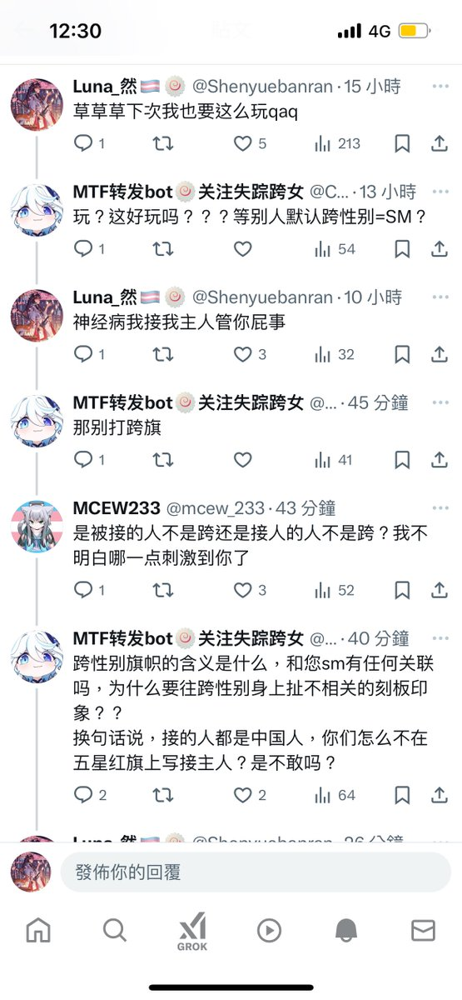
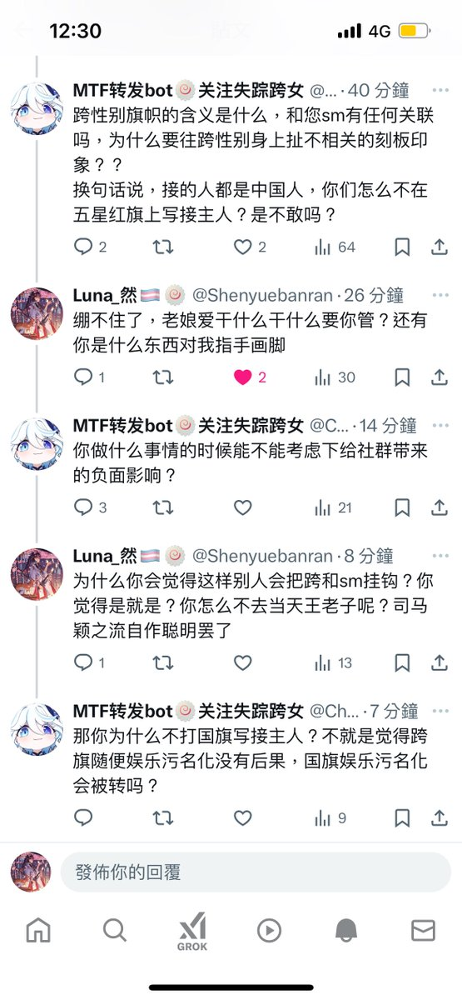
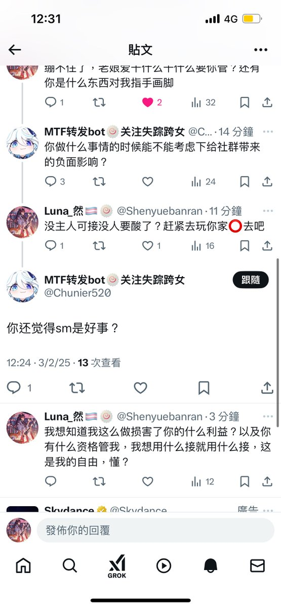

🍀🍥竹蜻蜓🍥🍀（诚聘对象版）
@zqtlovekris99
这不那个说跨女18岁前不要hrt的逼吗自以为自己啥都懂的魔怔逼，鉴定为玩原神玩的，看见人用跨旗就应激，那些傻逼跨女把跨旗叫药娘旗的时候怎么没见你出来叫，就欠让清蒸挂了



Luna_然🏳️⚧️🍥
@Shenyuebanran
我本来从不挂人的，但是这个b实在是太抽象了，你是谁啊你就管我干什么？我没花你家一分钱没耽误你一分钟时间也不知道你在急什么，鉴定为魔怔抽象b https://t.co/5RddXF4Y2e